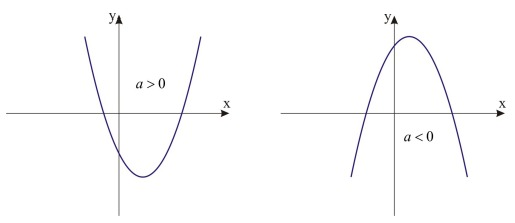

Função Quadrática
A função quadrática, também chamada de função do segundo grau, é expressa como f(x) = ax² + bx + c ou y = ax² + bx + c, sendo que os coeficientes "a, b e c" números reais e "a" diferente de 0 (zero).
De modo geral, as funções possuem dois elementos básicos:
1) Domínio: Corresponde ao conjunto dos valores possíveis das abscissas (x);
2) Imagem: Conjunto de valores das ordenadas (y), estabelecida pela aplicação de f(x).
Já o grau da função é determinado de acordo com o maior expoente da variável x. No caso da função quadrática, dois é o maior expoente de x.
Mas atenção! Se em uma função não houver nenhum expoente na variável x significa que ela é do primeiro grau.
Exemplo: f(x) = x + 1;
Exemplo: f(x)= 2x² – 2x;
Exemplo: f(x) = 4x³ + x² + 2x + 4;
Função quadrática completa e incompleta
Você percebeu que no exemplo y = 3x² – 4x, o coeficiente c é igual a zero? Isso indica que esta é uma função incompleta, o mesmo vale quando o coeficiente b é igual a zero. Confira outros exemplos:
f(x) = 2x² + 5, onde a = 2, b = 0 e c = 5
f(x) = 3x² , onde a = 3, b = 0 e c = 0
Existe também a função completa, a qual todos os coeficientes (a, b e c) são diferentes de zero. Confira alguns exemplos:
f(x) = 5x² + 2y+ 1, onde a = 5, b = 2 e c = 1
f(x) = x² + 4y+ 11, onde a = 1, b = 4 e c = 11
Gráfico da função quadrática
O gráfico da função quadrática é uma parábola, cuja concavidade é determinada de acordo com o valor de a. Se a > 0, a concavidade da parábola estará voltada para cima e se a < 0, a concavidade da parábola estará voltada para baixo
Raízes e Vértice
Dois conceitos estão relacionados à concavidade da parábola: as raízes (pontos onde o gráfico intercepta o eixo x) e o vértice (ponto de máximo ou mínimo a função). As raízes podem ser calculadas pela fórmula de Bháskara ou outros métodos. Lembrando que, as funções quadráticas possuem , no máximo, duas raízes reais.
Em relação ao vértice, na função de primeiro grau é possível traçar o gráfico a partir de dois pontos. Contudo, isso não acontece na função de segundo grau, pois é necessário conhecer mais que dois pontos. A partir do valor de delta = b² - 4ac, sabemos que:
Exemplo: Dada a função y = 4x² – 4x – 24, vamos resolvê-la seguindo algumas etapas:
O 1º passo é escrever o valor dos coeficientes, sabemos que a = 4, b = – 4 e c = - 24.
O 2º passo consiste em calcular o valor da discriminante delta, logo:
O 3º passo é substituir os valores da discriminante e nos coeficientes na fórmula de Bháskara. Assim temos: